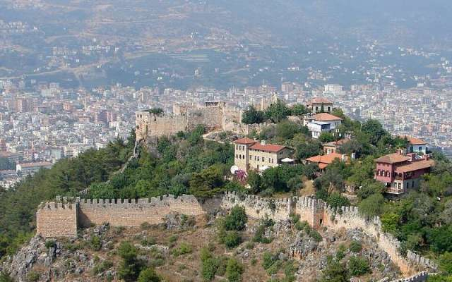
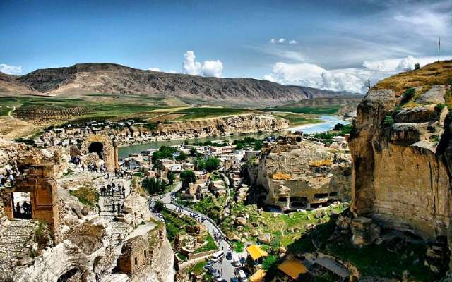

Los selyúcidas y los beylicatos. Asentados en Anatolia tras Manzikert, los turcos hicieron de Konya su capital y crearon una nueva cultura de caravasares, madrasas y arte de azulejos. La victoria del sultán Alp Arslan sobre el emperador bizantino Romano Diógenes en Manzikert (Malazgirt) en 1071 se considera el punto de inflexión del asentamiento turco en Anatolia. El Estado selyúcida de Anatolia, con capital en Konya, vivió su esplendor en los siglos XII–XIII. Los caravasares construidos en las rutas comerciales muestran la importancia que daba al comercio y a los viajeros. Los azulejos de la madrasa Karatay y el Museo de Mevlana en Konya son símbolos del arte selyúcida y de la tradición sufí; el pensamiento de Mevlana Yalal al-Din Rumi, del siglo XIII, se lee hoy en todo el mundo. El cementerio selyúcida de Ahlat, con sus lápidas talladas, es un museo al aire libre único, y el castillo de Alanya refleja el poder selyúcida en el Mediterráneo. La Gran Mezquita y Hospital de Divriği (Sivas) son Patrimonio de la UNESCO desde 1985. Con la desintegración del Estado selyúcida comenzó la época de los beylicatos de Anatolia. La Kütahya de los germiyánidas, con su cerámica, y Hasankeyf, que floreció con los artúquidas a orillas del Tigris, representan este periodo. El complejo de Hacıbektaş muestra la diversidad del mundo espiritual de Anatolia.
Asentados en Anatolia tras Manzikert, los turcos hicieron de Konya su capital y crearon una nueva cultura de caravasares, madrasas y arte de azulejos.
La victoria del sultán Alp Arslan sobre el emperador bizantino Romano Diógenes en Manzikert (Malazgirt) en 1071 se considera el punto de inflexión del asentamiento turco en Anatolia. El Estado selyúcida de Anatolia, con capital en Konya, vivió su esplendor en los siglos XII–XIII. Los caravasares construidos en las rutas comerciales muestran la importancia que daba al comercio y a los viajeros.
Los azulejos de la madrasa Karatay y el Museo de Mevlana en Konya son símbolos del arte selyúcida y de la tradición sufí; el pensamiento de Mevlana Yalal al-Din Rumi, del siglo XIII, se lee hoy en todo el mundo. El cementerio selyúcida de Ahlat, con sus lápidas talladas, es un museo al aire libre único, y el castillo de Alanya refleja el poder selyúcida en el Mediterráneo. La Gran Mezquita y Hospital de Divriği (Sivas) son Patrimonio de la UNESCO desde 1985.
Con la desintegración del Estado selyúcida comenzó la época de los beylicatos de Anatolia. La Kütahya de los germiyánidas, con su cerámica, y Hasankeyf, que floreció con los artúquidas a orillas del Tigris, representan este periodo. El complejo de Hacıbektaş muestra la diversidad del mundo espiritual de Anatolia.
Dónde ver esta época
 Museo de MevlanaKonya
Museo de MevlanaKonya Museo de Karatay (Museo de los Azulejos)Konya
Museo de Karatay (Museo de los Azulejos)Konya Museo Arqueológico de KonyaKonya
Museo Arqueológico de KonyaKonya
Castillo de AlanyaAntalya Cementerio selyúcida de AhlatBitlis
Cementerio selyúcida de AhlatBitlis Museo de AhlatBitlis
Museo de AhlatBitlis Museo de Arte Turco-Islámico y EtnografíaErzurum
Museo de Arte Turco-Islámico y EtnografíaErzurum Castillo de ErzurumErzurum
Castillo de ErzurumErzurum Museo de Arte Turco e IslámicoEstambul
Museo de Arte Turco e IslámicoEstambul Museo EtnográficoAnkara
Museo EtnográficoAnkara Museo de HacıbektaşNevşehir
Museo de HacıbektaşNevşehir
Museo y yacimiento de HasankeyfBatman Museo de los Azulejos de KütahyaKütahya
Museo de los Azulejos de KütahyaKütahya🎓 Pon a prueba lo aprendido
1. ¿En qué año se libró la batalla de Manzikert?
2. ¿Cuál fue la capital de los selyúcidas de Anatolia?
3. ¿Qué madrasa de Konya es famosa por sus azulejos?
4. ¿En qué distrito está el cementerio selyúcida famoso por sus lápidas talladas?